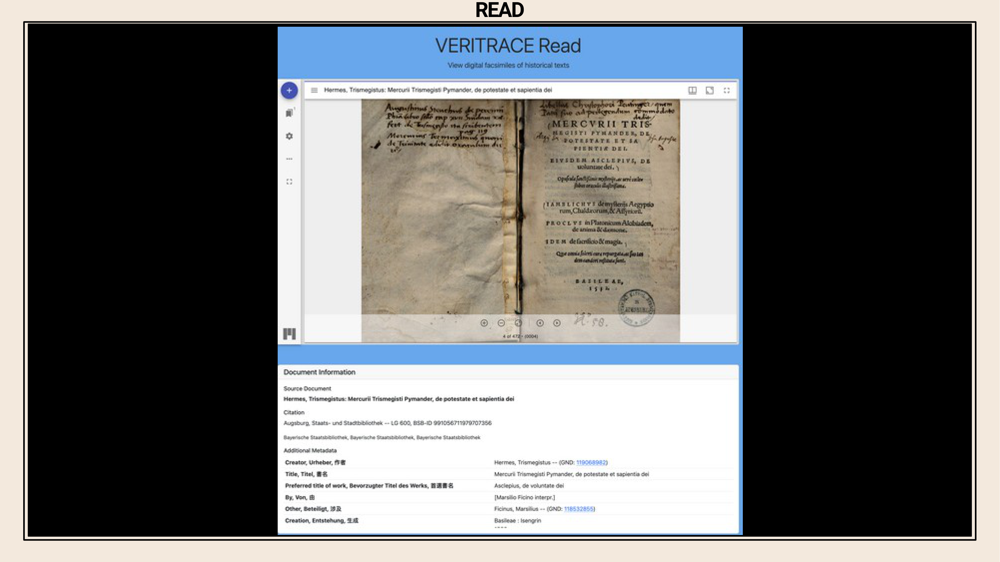
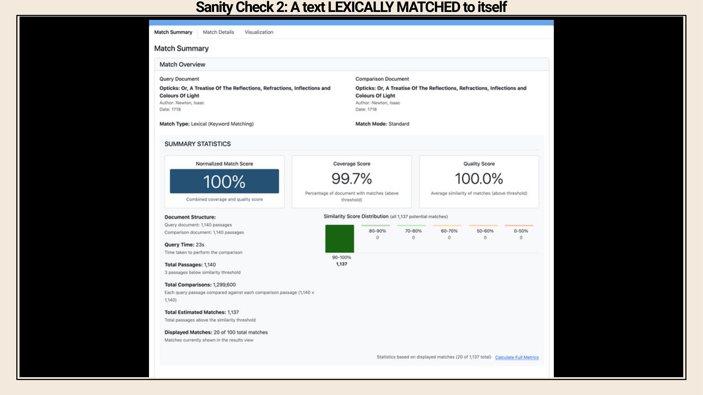
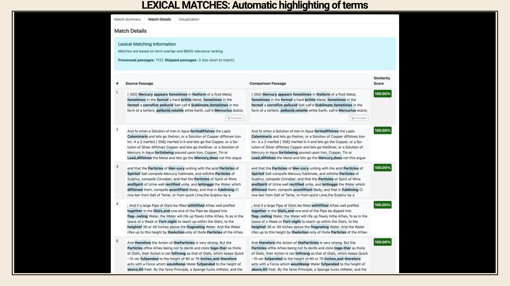
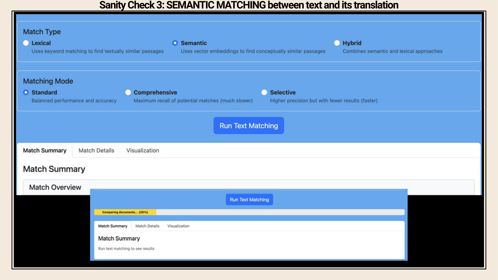
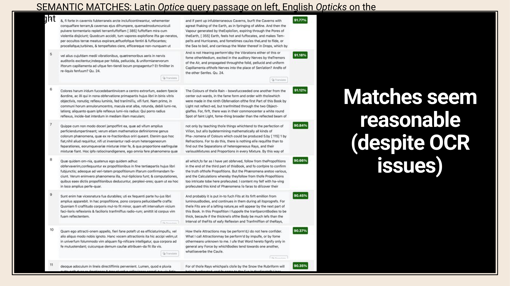
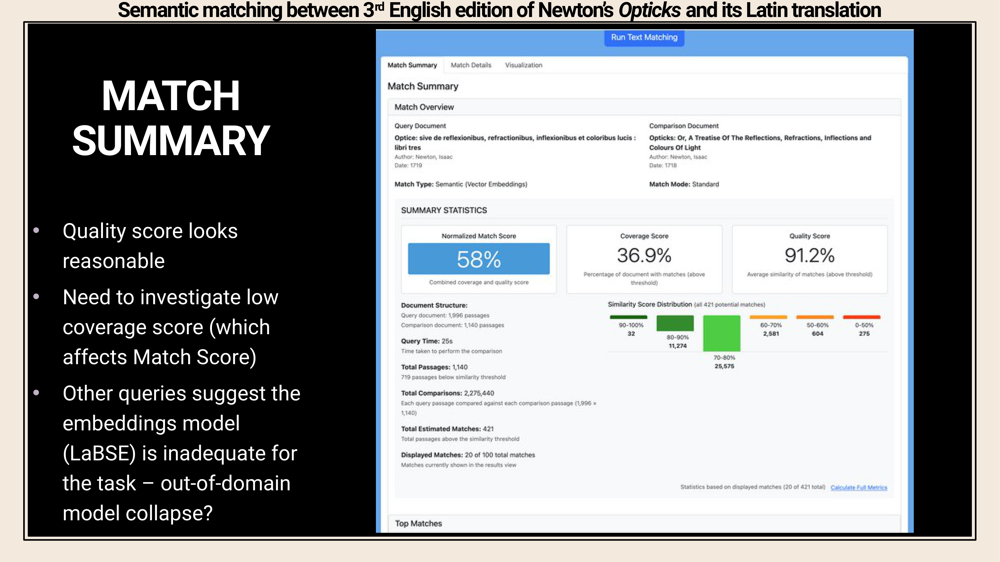

6 The VERITRACE Project
Overview
The VERITRACE project, a five-year ERC Starting Grant (2023-2028), operates from the Vrije Universiteit Brussel (VUB) under the distinguished leadership of Research Professor Cornelis J. Schilt. This ambitious initiative meticulously investigates the profound influence of early modern ‘ancient wisdom’ traditions upon natural philosophy. Professor Schilt and his team aim to trace the enduring impact of seminal texts such as the Chaldean Oracles, Sibylline Oracles, Orphic Hymns, and the Corpus Hermeticum on intellectual giants like Isaac Newton and Johannes Kepler. Concurrently, they endeavour to uncover a broader, frequently overlooked network of related works, aptly termed the ‘great Unread’.
The VERITRACE team employs sophisticated computational methods to facilitate large-scale multilingual exploration. Their approach identifies textual reuse, discerning both direct lexical overlaps and subtle semantic similarities, whilst also revealing hidden networks of texts, passages, themes, topics, and authors. This rigorous investigation further seeks to illuminate novel patterns within the intellectual history and philosophy of science. Utilising a diverse multilingual dataset of approximately 430,000 printed texts from 1540 to 1728, meticulously sourced from Early English Books Online (EEBO), Gallica, and the Bavarian State Library, the team applies state-of-the-art digital techniques. These include advanced keyword search, precise text matching, nuanced topic modelling, and insightful sentiment analysis.
Core challenges for the project encompass the variable quality of Optical Character Recognition (OCR), the complexities of early modern typography and semantics across at least six languages, and the sheer volume of data. To address these hurdles, the team leverages Large Language Models (LLMs) for both metadata enrichment, employing GPT-based LLMs as discerning ‘judges’, and semantic encoding, utilising BERT-based LLMs for robust vector embeddings. A newly developed web application, currently in its alpha version, provides essential functionalities for corpus exploration, advanced search, and text matching. Future plans for this application include the integration of powerful analytical tools such as topic modelling and diachronic analysis. Comprising five members, including Professor Schilt as PI, a classicist, and historians, the VERITRACE team adeptly navigates significant computational and methodological complexities in its pursuit of comprehensive historical analysis.
6.1 Project Overview and Core Objectives

The VERITRACE project, a five-year ERC Starting Grant awarded from 2023 to 2028, operates from the Vrije Universiteit Brussel (VUB) under the leadership of Research Professor Cornelis J. Schilt. This initiative comprises a five-member team, including a classicist, historians, and a digital humanities specialist, who collectively aim to trace the profound influence of an early modern ‘ancient wisdom’ tradition on the evolution of natural philosophy and science.
Professor Schilt and his colleagues specifically focus on a close-reading corpus of 140 works, encompassing seminal texts such as the Chaldean Oracles, the Sibylline Oracles, the Orphic Hymns, and the Corpus Hermeticum. Historical evidence confirms the significant impact of these works; for instance, Isaac Newton engaged with the Sibylline Oracles, whilst Johannes Kepler demonstrated familiarity with the Corpus Hermeticum. Beyond these well-known connections, the project endeavours to uncover a much broader, often overlooked network of texts and intellectual relationships within this tradition, collectively termed the ‘great Unread’. These works, frequently authored by lesser-known figures, typically remain outside the primary focus of historical scholarship, yet they offer crucial insights into the intellectual landscape of the early modern period.
6.2 Computational Approaches to History, Philosophy, and Sociology of Science (HPSS)

The VERITRACE project fundamentally aims to advance the field of History, Philosophy, and Sociology of Science (HPSS) through the application of sophisticated computational methodologies. Professor Schilt and his team are developing tools for large-scale multilingual exploration, primarily through advanced keyword search capabilities. Crucially, the initiative seeks to identify textual re-use within an extensive, multilingual corpus, distinguishing between direct lexical overlaps and more subtle indirect semantic similarities. This capability effectively functions as an ‘Early Modern Plagiarism Detector’, enabling the detection of unacknowledged textual appropriation.
Furthermore, the project strives to uncover previously ignored networks of texts, passages, themes, topics, and authors, thereby illuminating hidden intellectual connections. Ultimately, these computational investigations are poised to reveal novel patterns and insights into the intellectual history and philosophy of science.
6.3 Data Set Characteristics and Analytical Techniques

To achieve its ambitious objectives, the VERITRACE team has assembled a substantial and diverse multilingual dataset. They focus exclusively on printed works from approximately 1540 to 1728, concluding shortly after Isaac Newton’s death. This extensive corpus comprises around 430,000 texts in at least six different languages.
The researchers meticulously gathered these digital texts from three primary sources: Early English Books Online (EEBO), Gallica (the digital library of the French National Library), and the Bavarian State Library, which constitutes the largest single contributor to the dataset. Leveraging this rich collection, the team applies state-of-the-art digital techniques, including advanced keyword search functionalities, sophisticated text matching algorithms, topic modelling for thematic discovery, and sentiment analysis to discern emotional tones, amongst other analytical methods.
6.4 Core Challenges and Initial LLM Applications

The VERITRACE project confronts several formidable challenges inherent in processing historical texts at scale. Firstly, the team contends with highly variable Optical Character Recognition (OCR) quality, as libraries provide texts in raw formats—including XML, HOCR, and HTML files—without corresponding ground truth page images. This initial data quality significantly impacts all subsequent processing stages.
Secondly, the project navigates the complexities of early modern typography and the evolving semantics of at least six distinct languages, presenting considerable linguistic hurdles. Thirdly, the sheer volume of data—hundreds of thousands of texts printed across Europe over approximately two centuries—necessitates robust computational strategies. To address these challenges, the team currently employs Large Language Models (LLMs) in two principal capacities. On the decoder side, GPT-based LLMs assist in enriching and cleaning metadata, effectively acting as ‘judges’ to refine bibliographic information. Concurrently, on the encoder side, BERT-based LLMs generate vector embeddings, encoding the semantic meaning of sentences and short passages within the textual corpus to facilitate precise text matching.
6.5 LLMs as Judges for Metadata Enrichment: Motivation and Challenges

A fundamental motivation for the VERITRACE project involves leveraging the Universal Short Title Catalogue (USTC) as a high-quality source for metadata enrichment. The primary objective is to map VERITRACE’s internal records onto USTC’s comprehensive entries, thereby generating ‘enriched’ metadata that demands significantly less manual cleaning.
However, this process presents a considerable challenge: whilst some mapping can be automated using existing external identifiers, the vast majority of VERITRACE records currently lack such identifiers and remain uncleaned. Consequently, the project faces the complex task of matching these records at scale, a process that proves exceedingly tedious for human review. The Universal Short Title Catalogue, accessible at https://www.ustc.ac.uk, serves as the authoritative reference for this enrichment endeavour.
6.6 Automating Bibliographic Record Matching

The VERITRACE team seeks to automate the arduous task of comparing bibliographic metadata pairs to ascertain whether they represent the same underlying printed text. Previously, each team member undertook the extremely tedious manual review of 10,000 such pairs. To mitigate this, the researchers initially generate potential matches using a fuzzy matching algorithm, which assigns a match score to each pair.
The ultimate aim is for Large Language Models (LLMs) to perform these yes/no decisions at scale, critically providing detailed reasoning for each determination. However, this LLM-based approach has not yet achieved full functionality. The models frequently produce hallucinations, and whilst requesting more structured output can reduce these, it often results in generic, less helpful reasoning, indicating an ongoing challenge in balancing precision with informative responses.
6.7 LLM Bench for Match Evaluation

To address the challenge of automated bibliographic record matching, the VERITRACE project proposes ‘The LLM Bench’, a sophisticated panel of Large Language Models designed to evaluate potential matches. This system employs a tiered model configuration: llama3:8b serves as the primary model, prized for its power and accuracy; qwen2:5.7b acts as a secondary model, offering architectural diversity; mixtral:8x7b functions as a tiebreaker, possessing greater power than the initial two; and llama3.3:latest is designated as an expert model, reserved exclusively for complex edge cases requiring human review.
The process involves feeding pairs of bibliographic records—one from a low-quality metadata source and the other from a high-quality source—through this chain of LLMs. Each model provides a judgment (match or non-match), accompanied by detailed reasoning and confidence levels. Subsequently, the team validates these LLM decisions against ground truth data, with the VERITRACE team conducting a final review to ensure accuracy and refine the system.
6.8 Prompt Guidelines and LLM Output Analysis

The VERITRACE team has established comprehensive prompt guidelines, termed ‘MATCHING_GUIDELINES’, to direct the LLMs in determining bibliographic record matches. These guidelines prioritise title content, whilst accounting for minor formatting differences, and emphasise author alignment, publication dates within a one-year window, and corroborating place/printer information.
Specific match criteria mandate identical core work in titles, precise or near-precise dates, matching or equivalent publication places, recognisable printer variations, and substantial author overlap. Conversely, non-match indicators include significantly divergent titles, dates exceeding a one-year difference, unexplained discrepancies in places or printers, and distinct authors or edition variations. An illustrative example demonstrates a ‘Ground Truth’ of ‘NON-MATCH’ yet a ‘Final Decision’ of ‘MATCH’ with high confidence (87.7%), driven by the tiebreaker model. The reasoning provided highlights factors such as title similarity, identical authors and dates, and equivalent publication places, even when language discrepancies exist. A significant ongoing challenge, however, stems from hallucinations in the output of the open-source LLMs employed. Whilst requesting more structured output mitigates these hallucinations, it often results in generic, less informative reasoning, presenting a delicate balance for the researchers to refine.
6.9 VERITRACE Web Application: Alpha Version and Technical Approach

The VERITRACE project has developed an ‘alpha’ version of its web application, which remains in its nascent stages and is not yet publicly accessible, currently residing on the presenter’s local machine. This application represents a future promise of the project’s capabilities, serving primarily as a testing and development platform.
The engineers are currently evaluating a BERT-based Large Language Model, specifically LaBSE, for generating vector embeddings that represent every passage within the extensive textual corpus. However, initial assessments suggest that whilst LaBSE functions in certain scenarios, it will likely prove insufficient for the project’s comprehensive requirements. Due to its early developmental stage, the application is demonstrated through static screenshots rather than a live, interactive website.
6.10 Data Processing Pipeline for Web Application

The VERITRACE web application relies on an Elasticsearch database as its backend, necessitating a complex and extensive data processing pipeline to transform raw text into a usable format. This pipeline involves numerous critical steps, each demanding significant optimisation.
Initially, the system extracts text into standardised text files, subsequently generating precise mappings of all character positions. Further stages include segmenting documents into manageable units and rigorously assessing the Optical Character Recognition (OCR) quality, a particularly challenging task given the raw nature of the input. Each of these stages, whilst seemingly straightforward, requires considerable time and effort—potentially a week per stage—to optimise fully, underscoring the intricate background work underpinning the application’s functionality.
6.11 VERITRACE Data Processing Pipeline Details

The VERITRACE project employs a sophisticated 15-stage data processing pipeline, currently running with 40% overall progress, indicating six completed stages. A detailed status summary reveals eight pending stages, one actively running, and no failures or skips. The pipeline’s configuration specifies parameters such as a working directory, file and error policies, input directory, dashboard port (8080), and settings for dependency verification and browser interaction.
Completed stages include batch processing (1.3s), character position generation (5.3s), page extraction (7.3s), language analysis (4m 35s), language map generation (0.7s), and OCR quality assessment (12.7s). The ‘segment documents’ stage is presently active, whilst subsequent stages, such as filtering segments, tracking relationships, unifying JSON, enriching MongoDB, and enriching sequences, remain pending. This complex pipeline transforms raw XML, HOCR, and HTML files into a format suitable for Elasticsearch, with vector embeddings generated towards its conclusion, each stage demanding meticulous optimisation.
6.12 VERITRACE Web Application: Explore Section and Metadata

The VERITRACE web application organises its functionalities into five primary sections: Explore, Search, Match, Analyse, and Read. The ‘Explore’ section serves as a comprehensive hub for corpus statistics and metadata exploration, currently presenting 427,305 metadata records directly from a Mongo database.
This section offers various visualisations, including pie charts for language distribution and data sources, a bar chart detailing documents by decade, and a donut chart illustrating top publication places. Furthermore, the ‘Metadata Explorer’ enables users to browse and filter documents based on their metadata attributes. Crucially, the system performs granular language identification on every text, down to approximately 50 characters, to accurately account for multilingual content. For instance, a text might be identified as 15% Greek and 85% Latin, classifying it as substantively multilingual. The application also attempts to assess OCR quality on a page-by-page basis, a challenging endeavour given the absence of ground truth page images.
6.13 VERITRACE Search Functionality

For most scholars, the primary point of engagement with the VERITRACE web application will be its robust search functionality. Whilst the current prototype operates on a limited corpus of 132 files, rather than the full 400,000-plus, its index already occupies 15 gigabytes, indicating that the complete online corpus will span many terabytes.
A basic keyword search, for example, for ‘Hermes’, rapidly retrieves 22 documents with 332 total matches in 107 milliseconds, including works like ‘Hermes Trismegisti Erkännuß…’ by Hermes (1706) and ‘Hermes theologus…’ by Wodenote (1649). Conversely, a more refined, structured query such as ‘author:kepler ’hermes’’ significantly narrows the results, yielding just one document with two total matches in a mere 17 milliseconds. This specific result points to Kepler’s ‘Prodromus Dissertationum Cosmographicarum…’ from 1621, which contains the phrase ‘Hermes tuus.’. This comparison effectively demonstrates the enhanced precision attainable through the use of structured queries within the digital humanities search environment.
6.14 VERITRACE Search Interface and Query Specificity

The VERITRACE search interface consistently displays corpus statistics, indicating 132 unique files, over 16.9 million total segments, and an index size of 15.37 gigabytes for the ‘veritrace_2025_a2’ dataset. A general keyword search for ‘hermes’, for example, rapidly retrieves 22 documents with 332 total matches in 107 milliseconds, including works like ‘Hermes Trismegisti Erkännuß…’ by Hermes (1706) and ‘Hermes theologus…’ by Wodenote (1649).
Conversely, a more refined, structured query such as ‘author:kepler ’hermes’’ significantly narrows the results, yielding just one document with two total matches in a mere 17 milliseconds. This specific result points to Kepler’s ‘Prodromus Dissertationum Cosmographicarum…’ from 1621, which contains the phrase ‘Hermes tuus.’. This comparison effectively demonstrates the enhanced precision attainable through the use of structured queries within the digital humanities search environment.
6.15 Future Analytical Capabilities: The ‘Analyse’ Module

Whilst currently unimplemented, the ‘Analyse’ section of the VERITRACE website is slated to host a suite of advanced analytical tools. Future functionalities will include Topic Modelling, enabling users to discover prevalent themes across the entire corpus or within selected documents. Additionally, the platform will integrate Latent Semantic Analysis (LSA) for assessing document similarity and Diachronic Analysis, designed to visualise linguistic and conceptual shifts over extended historical periods. The development team actively incorporates insights from contemporary research and community feedback to inform the meticulous implementation of these sophisticated analytical capabilities.
6.16 VERITRACE Read Section: Digital Facsimiles and Metadata

The VERITRACE platform incorporates a dedicated ‘Read’ section, designed to provide scholars with access to high-quality digital facsimiles of historical texts, moving beyond raw OCR output. This section integrates a Mirador viewer, enabling users to read PDFs of every text within the corpus, much like a conventional library website.
Alongside the visual facsimile, comprehensive metadata is readily available. For instance, a document such as ‘Mercurii Trismegisti Pymander…’ by Hermes, Trismegistus, published in 1534, is presented with extensive bibliographic details including its creator, full title, printer, publication place, and date. Furthermore, granular language information, OCR quality assessments, and detailed document statistics enhance the scholarly utility of each entry.
6.17 VERITRACE Match Tool: Textual Similarity and Customisation

The VERITRACE Match Tool is meticulously designed to identify textual reuse and similarities between documents, primarily leveraging vector embeddings. This versatile tool supports various comparison modes: users can compare a single document against another, conduct multi-document comparisons (e.g., Newton’s Latin Opticks against all of Kepler’s works), or even attempt a full corpus comparison, though the latter presents significant computational challenges regarding processing power and user waiting times.
Crucially, the tool offers extensive customisation through a multitude of parameters, allowing users to fine-tune the matching algorithms. Lexical matching, for instance, includes adjustable parameters such as minimum similarity (0.65), maximum results (100), and Jaccard/BM25 weights. Semantic matching, conversely, features settings for minimum similarity (0.85), short passage thresholds, and vector normalisation. A hybrid matching option combines both approaches with adjustable weighting. Additional parameters govern corpus matching batch sizes and query settings. A key case study involves comparing Newton’s Latin and English Opticks to evaluate both lexical and semantic matches, demonstrating the tool’s capacity for cross-lingual analysis.
6.18 Text Matching Methodologies: Lexical, Semantic, and Hybrid

The VERITRACE Match Tool employs two fundamental types of text matching: lexical and semantic, with a hybrid option combining both. Lexical matching identifies textually similar passages based on keyword overlap and vocabulary similarity. However, this approach proves ineffective across different languages, as direct lexical matches are unlikely. Consequently, for the project’s multilingual corpus, semantic matching becomes indispensable. This method utilises vector embeddings to identify conceptually similar passages, even when they share no common linguistic vocabulary, thereby enabling cross-lingual conceptual comparisons. A hybrid approach allows for the combination of both methods with adjustable weighting.
Furthermore, the tool offers distinct matching modes: ‘Standard’ for balanced performance, ‘Comprehensive’ for maximum recall (albeit slower), and ‘Selective’ for higher precision (faster). A crucial ‘sanity check’ involves a lexical match between Newton’s Latin Opticks (1719) and its English counterpart (1718). As anticipated, the ‘Standard’ mode yields no matches, confirming the ineffectiveness of lexical matching across languages. Interestingly, the ‘Comprehensive’ mode reveals three matches, likely indicating instances of English text, such as a preface, embedded within the Latin edition.
6.19 Lexical Match Results and Semantic Match Expectations

The VERITRACE system visually presents lexical match results with automatic highlighting of shared terms, displaying the source passage on the left and the comparison passage on the right, alongside a similarity score. A ‘sanity check’ involving a lexical comparison of Newton’s English Opticks (1718) against itself demonstrates the system’s precision: it yields a 100% normalised match score, a 99.7% coverage score, and a perfect 100% quality score. This comparison, involving 1,140 passages and over 1.2 million individual comparisons, completes in 23 seconds, identifying 1,137 estimated matches, all falling within the 90-100% similarity range.
Crucially, when performing a semantic match between a text and its translation, such as the Latin and English versions of Opticks, the researchers anticipate reasonable matches. Despite significant lexical differences, the conceptual similarity between a text and its translation should be accurately captured by semantic embeddings.
6.20 Lexical Match Highlighting and Semantic Match Results

The VERITRACE system provides automatic highlighting for lexical matches, identifying terms based on overlap and BM25 relevance ranking. This process successfully analyses 1,137 passages, skipping only three deemed too short for matching. Examples demonstrate precise 100% similarity scores for identical or near-identical passages, such as descriptions of ‘Mercury’ in various forms or discussions of chemical solutions and physical phenomena.
When conducting semantic matches between the Latin and English versions of Newton’s Opticks, the results generally appear reasonable, even in the presence of OCR issues, with conceptually similar passages, such as those discussing ‘colors’, aligning effectively. However, the match score functionality requires further development; whilst the quality score remains high, the coverage score is inconsistent. This discrepancy might be partially explained by the Latin edition being considerably longer than its English counterpart. Nevertheless, broader queries suggest that the current embedding model, LaBSE, is ultimately inadequate for the project’s complex requirements.
6.21 Semantic Matching Interface and Progress

The VERITRACE interface for semantic matching offers clear configuration options. Users select from ‘Lexical’, ‘Semantic’ (the default for conceptual comparisons), or ‘Hybrid’ match types, whilst also choosing a ‘Standard’, ‘Comprehensive’, or ‘Selective’ matching mode to balance performance and accuracy. A prominent ‘Run Text Matching’ button initiates the analysis. Results are then presented across three distinct tabs: ‘Match Summary’, ‘Match Details’, and ‘Visualization’. During the comparison process, a progress bar indicates the current status, such as ‘Comparing documents… (20%)’, alongside an instruction to run the matching to view results. This module specifically aims to evaluate translation quality through rigorous text comparison.
6.22 Semantic Match Results and Model Adequacy

When conducting semantic matches between the Latin and English versions of Newton’s Opticks, the results generally appear reasonable, even in the presence of OCR issues, with corresponding paragraphs discussing concepts like ‘Mercury’ and ‘colours’ aligning effectively. The system reports a combined match score of 58%, with a coverage score of 36.9% and a high quality score of 91.2%. Analysis of the 421 estimated matches reveals that whilst some achieve 90-100% similarity, the majority fall within the 70-90% range. The Latin query document contains 1,996 passages, compared to 1,140 in the English comparison document, and the query completes 2.2 million comparisons in 25 seconds.
Despite these promising indicators, the project team expresses concern that the current embedding model, LaBSE, is likely inadequate for the task. This inadequacy may stem from ‘out-of-domain model collapse’, a phenomenon observed when models trained on modern languages are applied to historical, multilingual texts, leading to suboptimal performance.
6.23 Future Challenges and Model Selection

The VERITRACE project faces several critical challenges on the horizon, particularly concerning model selection and data quality. Whilst LaBSE serves as an initial choice for vector embeddings, the researchers acknowledge the potential superiority of other models, such as XLM-Roberta, intfloat multilingual-e5-large, or historical mBERT, each presenting distinct trade-offs in terms of storage requirements and inference time. A key strategic question remains whether to fine-tune a base model specifically on the project’s unique historical corpus, given its distinct characteristics, or to persist with existing pre-trained models.
Furthermore, the evolving nature of semantic meaning across centuries poses a significant hurdle; ensuring that texts from 1540 and 1700, written in different languages, occupy a coherent vector space presents a complex problem. Poor OCR quality, a pervasive issue, fundamentally impacts all downstream processes, including the crucial segmentation of texts into sentences and passages. Re-OCR’ing the entire corpus is not feasible, prompting considerations of re-OCR’ing only the lowest quality texts or actively seeking out existing high-quality versions. Finally, scaling and performance represent substantial future concerns; current queries on a mere 132 texts take 15 seconds, implying considerable challenges when expanding to the full 430,000-text corpus, necessitating robust solutions for managing computational resources and query times.
6.24 Additional Visual Materials
The following slides provide supplementary visual information relevant to the presentation:
 The slide is titled ‘Issues on the Horizon,’ indicating a discussion of future challenges and considerations. The background is a light beige, framed by a thick black border. In the top right corner, a decorative element features stylized plant branches with leaves, rendered in a light purple or lavender color, extending from the corner into the slide area. The content is presented as a series of bullet points addressing various technical and methodological concerns. The first point discusses model selection, stating that ‘LaBSE is just a starting choice – there are other embedding models that might work better: XLM-Roberta, intfloat multilingual-e5-large, historical mBERT, or others. All have trade-offs.’ This highlights the need to evaluate different embedding models for specific tasks. The second point poses a strategic question: ‘Or is this a losing battle and we ought to fine-tune one of these base models on our historical corpus?’ This suggests a debate between using off-the-shelf models versus domain-specific fine-tuning. The third issue addresses diachronic semantic change: ‘Semantic meaning changes over time – how to handle that across centuries?’ This points to the challenge of applying modern language models to historical texts where word meanings may have evolved. The fourth bullet focuses on data quality, specifically OCR errors: ‘Poor-quality OCR would seem to affect everything downstream. Not feasible to re-OCR our entire corpus. Re-OCR the very poor-quality texts? Invest time to find existing high-quality versions?’ This outlines the significant problem of noisy historical data and potential strategies for mitigation. The fifth point notes that ‘Scaling and performance will increasingly become an issue,’ indicating future challenges with computational resources as data volumes grow. Finally, the slide concludes with an open invitation for collaboration or guidance: ‘Advice very welcome!’
The slide is titled ‘Issues on the Horizon,’ indicating a discussion of future challenges and considerations. The background is a light beige, framed by a thick black border. In the top right corner, a decorative element features stylized plant branches with leaves, rendered in a light purple or lavender color, extending from the corner into the slide area. The content is presented as a series of bullet points addressing various technical and methodological concerns. The first point discusses model selection, stating that ‘LaBSE is just a starting choice – there are other embedding models that might work better: XLM-Roberta, intfloat multilingual-e5-large, historical mBERT, or others. All have trade-offs.’ This highlights the need to evaluate different embedding models for specific tasks. The second point poses a strategic question: ‘Or is this a losing battle and we ought to fine-tune one of these base models on our historical corpus?’ This suggests a debate between using off-the-shelf models versus domain-specific fine-tuning. The third issue addresses diachronic semantic change: ‘Semantic meaning changes over time – how to handle that across centuries?’ This points to the challenge of applying modern language models to historical texts where word meanings may have evolved. The fourth bullet focuses on data quality, specifically OCR errors: ‘Poor-quality OCR would seem to affect everything downstream. Not feasible to re-OCR our entire corpus. Re-OCR the very poor-quality texts? Invest time to find existing high-quality versions?’ This outlines the significant problem of noisy historical data and potential strategies for mitigation. The fifth point notes that ‘Scaling and performance will increasingly become an issue,’ indicating future challenges with computational resources as data volumes grow. Finally, the slide concludes with an open invitation for collaboration or guidance: ‘Advice very welcome!’